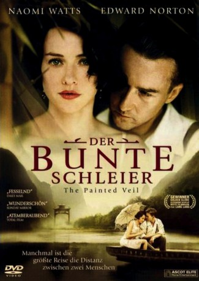
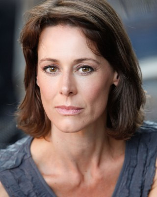

#1574 Der Bunte Schleier
Auszeichnungen: 1 GoldenGlobes gewonnen
 
 IMDB-Wertung: 7.5 / 10
IMDB-Wertung: 7.5 / 10  Metascore: 69
Metascore: 69 
Shanghai 1925: Dass seine Frau Kitty ihn nicht aus Liebe geheiratet hat, wusste Walter Fane. Aber dass sie gleich nach ihrer Ankunft in China eine Affäre mit dem britischen Vizekonsul beginnt, kann der verschlossene, nüchterne Arzt und Wissenschaftler nicht hinnehmen. Er zwingt Kitty, ihn in ein abgelegenes Dorf zu begleiten, in dem eine Cholera-Epidemie ausgebrochen ist. Eine selbstmörderische Reise, die nicht nur für Kitty tödlich enden könnte ...
Jahr: 2006
Dauer: 125 Minuten
FSK: 12
Land: China Studio: Ascot Elite Home EntertainmentTonspuren: DTS - ,
Untertitel: Deutsch,
Auflösung: 1080p (1920x800) Größe: 11878 MB
Genre: Drama, Liebe
Regisseur: John Curran
Drehbuch: Ron Nyswaner, W. Somerset Maugham
Soundtrack: Alexandre Desplat
Darsteller:
 Sally Hawkins als Mary , scenes deleted
Sally Hawkins als Mary , scenes deleted-  Juliet Howland als Dorothy Townsend
 Toby Jones als Waddington
Toby Jones als Waddington Edward Norton als Walter Fane
Edward Norton als Walter Fane Diana Rigg als Mother Superior
Diana Rigg als Mother Superior Liev Schreiber als Charlie Townsend
Liev Schreiber als Charlie Townsend- Zoe Telford als Leona
 Naomi Watts als Kitty Fane
Naomi Watts als Kitty Fane Anthony Chau-Sang Wong als Colonel Yu
Anthony Chau-Sang Wong als Colonel Yu Hélène Cardona als French Nun , uncredited
Hélène Cardona als French Nun , uncredited- Catherine An als Hostess
- Bin Li als Te-Ming
- Bin Wu als Student 1
- Alan David als Mr. Garstin
- Marie-Laure Descoureaux als Sister St. Joseph
- Lorraine Laurence als Sister Maryse
- Gwing-Gai Lee als Angry Chinese Man
- Li Feng als Sung Ching
- Gesang Meiduo als Amah
- Yin Qing als Student 2
- Ian Renwick als Geoffrey Denison
- Shihan Cheng als Warlord Kwei
- Liang Sijie als Student 3
- Maggie Steed als Mrs. Garstin
- Henry Sylow als Walter Junior
- Lucy Voller als Doris Garstin
- Yan Lü als Wan Xi
- Yu Xia als Wu Lien
- Ma Yun als Student 4
- Lin Zheng als Chinese Opera Star
- Tian Hua Yao als Singing Orphan
- Di Wu als Singing Orphan
- Yue Qi Liu als Singing Orphan
- Zhuo Er Li als Singing Orphan
- Jia Yi Hu als Singing Orphan
- Yu Tong Guo als Singing Orphan
- Wei Xin Zhao als Singing Orphan
- Xi Chen als Singing Orphan
- Tong Xuan Shi als Sinfing Orphan
- Yu Xin Tang als Singing Orphan
- Qiao Jia Li Gao als Singing Orphan
- Yu Yang Cheng als Singing Orphan
- Jia Hui Guo als Singing Orphan
- Yi Yuan Huang als Singing Orphan
- Shu Hao Xu als Singing Orphan
- Yue Fei als Singing Orphan
- Ting Yu Meng als Singing Orphan
- Zhu Yue Cheng als Singing Orphan
- Qiao Ming Fang Gao als Singing Orphan
- Ya Zuo Tan als Singing Orphan
Datei: X:\HD-Eastern-Modern(A-M)\Bunte Schleier, Der (2006, FSK12, 1920x800).mkv seit 23.07.2015
Festplatte: HD Eastern+Western
 Es gibt insgesamt 104 Filme in der Gruppe 'HD-Eastern-Modern(A-M)'
Es gibt insgesamt 104 Filme in der Gruppe 'HD-Eastern-Modern(A-M)'